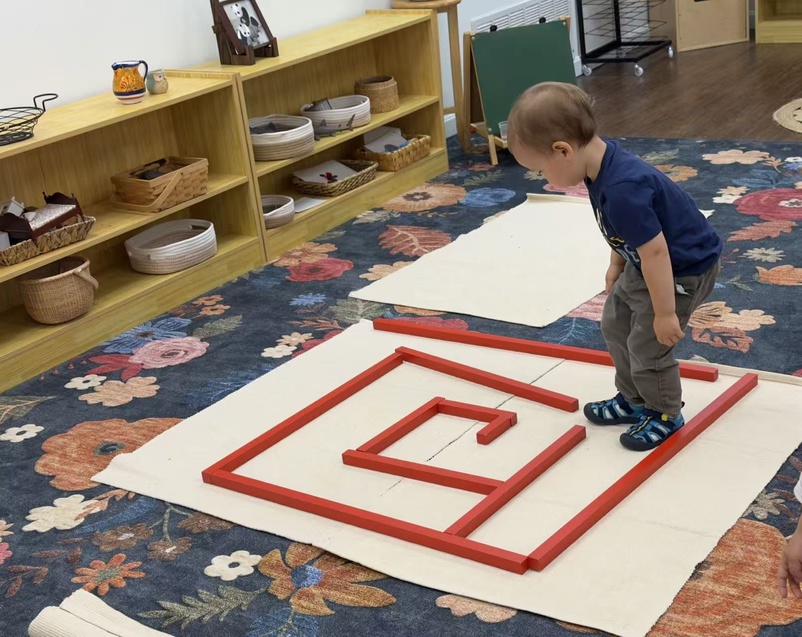

Children build balance and spatial awareness by walking along a maze path laid out with the red rods, following the twists and turns.
Gross Motor
Concentration
Spatial Awareness
Balance
Materials
How to Present
- Lay out the red rods on the floor in a winding maze path.
- Invite the child to stand at the start of the path.
- Demonstrate walking slowly along the path, staying inside the rods.
- Invite the child to walk the maze at their own pace, offering a hand for balance if needed.
Notes
A movement-based twist on the classic red rods material. Builds balance, concentration, and following a visual path.